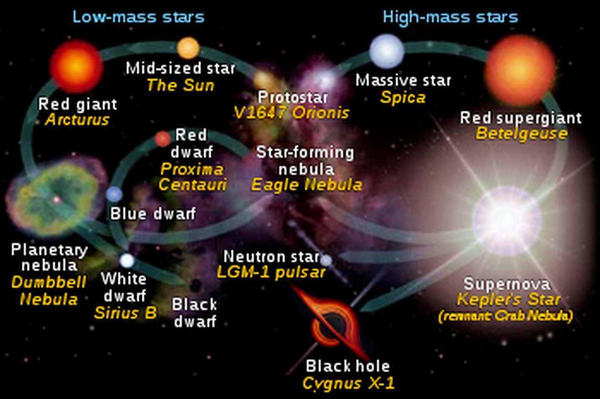

Star Lifecycle Fact:
The mass of a star determines how the star lives it's life.
For example, if the star was in the low-mass class, it would go from Protostar, to a Mid-sized star, to a red giant, then to a Planetary nebula, and then becoming either a white dwarf (which will eventaully become a black dwarf.), or a star-forming nebula, causing the lifecycle to begin again.
If the star was in the high-mass class, it would go from Protostar, to a Massive star, to a Red supergiant, to a supernova, which explodes into either a black hole, neutron star, or a star-forming nebula, and the cycle continues.
Here is the chart for reference in case you need it:

Wait, what's a Supernova?
Onward!
Go back home...